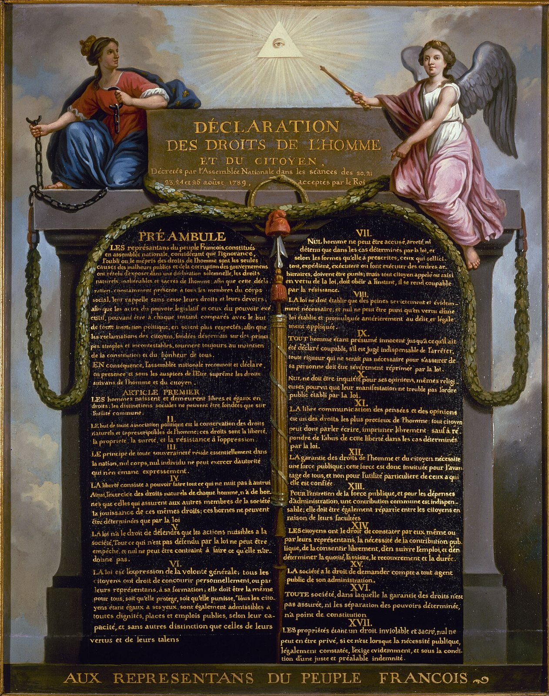
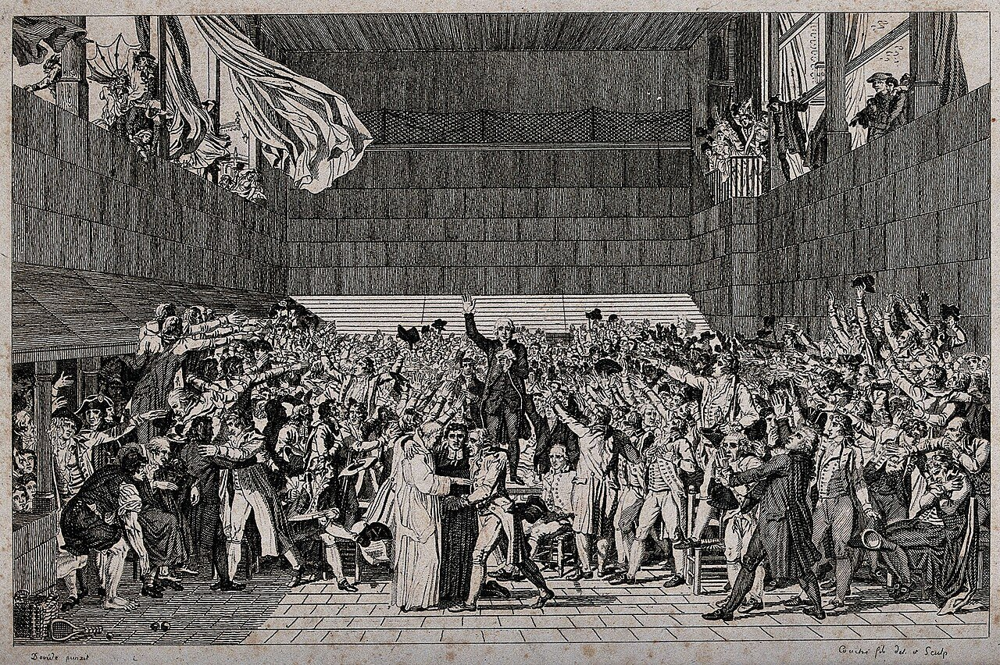
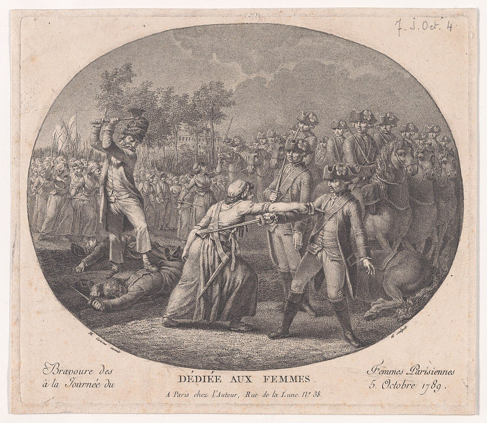
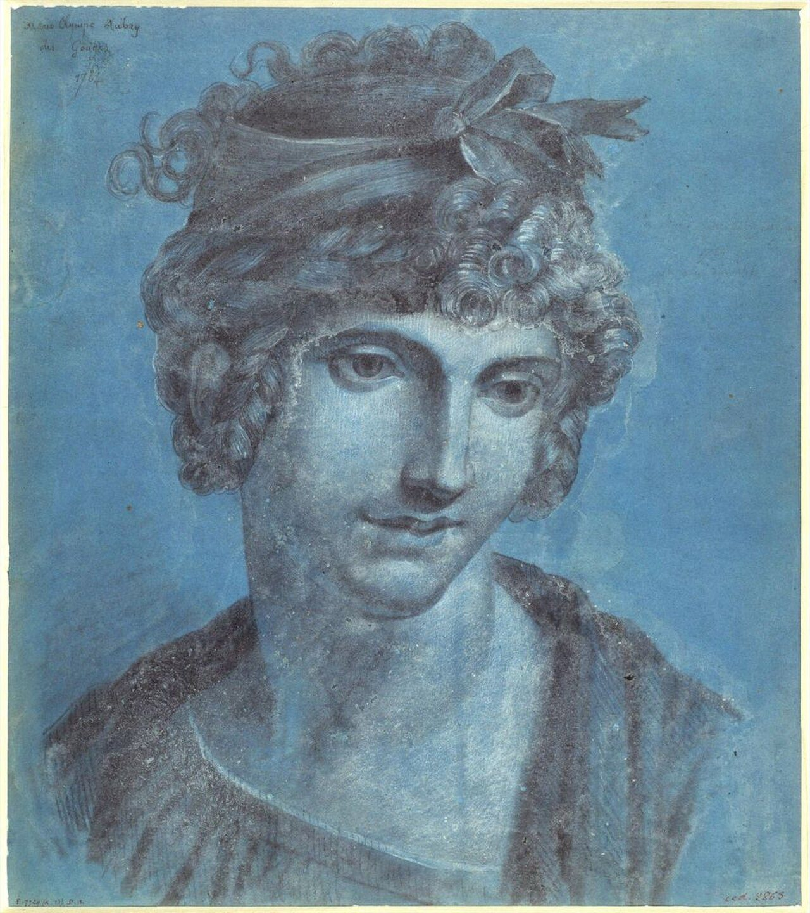

사진 · 인간과 시민의 권리 선언 그림
중학교 역사① · 5단원 제국주의와 국민 국가 건설 운동
권리프랑스 혁명과 국민 국가
르 바르비에, 「인간과 시민의 권리 선언」(1789 무렵) · CC0
“프랑스 혁명은
프랑스 혁명은
누구를 ‘국민’으로 만들었을까?
사실신분제 사회 → 국민 국가
해석권리 선언과 국민 개병
확장빠진 사람들의 목소리
구제도
제1신분성직자
제2신분귀족
제3신분나머지 모두
머릿수로
표결하자
사실1789년 5월 삼부회
해석신분별 1표 vs 의원 1명당 1표
확장제3신분이 국민 의회를 선언하다

사진 · 이 사람들은
무엇을 맹세했을까?
이 사람들은
무엇을 맹세했을까?
사실1789년 6월 20일
해석헌법을 만들 때까지 흩어지지 않겠다
사실·주장다비드는 왜 이 장면을 그렸을까
쿠셰, 「테니스코트의 서약」(다비드 원작 판화) · 웰컴 컬렉션 · CC BY 4.0
1789. 7. 14
사실파리 시민이 바스티유를 습격하다
해석왕의 권력을 상징하는 감옥
확장오늘의 프랑스 국경일
사진 · ‘인간’은
누구였을까?
‘인간’은
누구였을까?
사실1789년 8월 권리 선언
해석자유 · 평등 · 국민 주권 · 재산권
확장여성 · 식민지 노예는?
르 바르비에, 「인간과 시민의 권리 선언」(1789 무렵) · CC0

사진 · 여성들은 왜
베르사유로 갔을까?
여성들은 왜
베르사유로 갔을까?
사실1789년 10월 5일
해석빵과 왕을 파리로
사실·주장누가 이 판화를 샀을까
「1789년 10월 5일 파리 여성들의 용기」(판화, 1789 무렵) · 메트로폴리탄 미술관 · CC0

사진 · 여성의 권리 선언을
쓴 사람
여성의 권리 선언을
쓴 사람
사실올랭프 드 구주, 1791
해석여성도 시민이다
확장1793년 처형, 프랑스 여성 투표는 1944년
올랭프 드 구주로 추정되는 초상(1784) · 퍼블릭 도메인
1792 → 1799
사실공화정 · 공포 정치 · 총재 정부
해석혁명을 지키려는 폭력
확장나폴레옹의 등장
국민 국가의 도구
국민 개병나라를 지키는 국민
나폴레옹 법전법 앞의 평등
미터법같은 자로 재기
국가와 국기라 마르세예즈 · 삼색기
“프랑스 혁명이 만든 ‘국민’은 이었다.